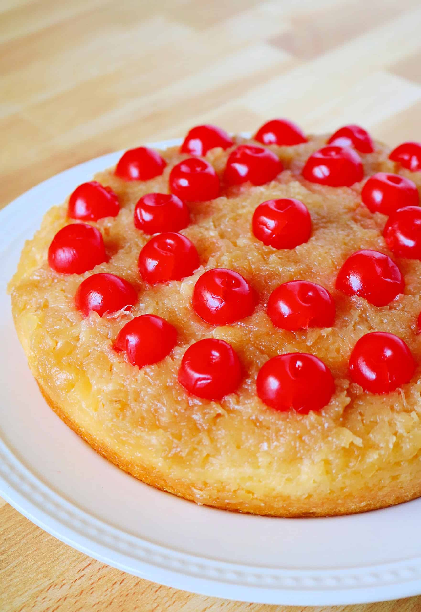

Pineapple Upside Down Cake
Pineapple Upside Down Cake

Description
This delicious and easy dessert recipe can be thrown together in a hurry, but your guests will never know. Note that by substituting a vegan butter alternative, you can create the elusive, dairy free dessert.
Ingredients
- One (1) box yellow cake mix
- One (1) cup water
- 1/3 cup vegetable oil
- Three (3) eggs
- One (1) 20oz can crushed pineapple
- One (1) cup packed light brown sugar
- Six (6) tablespoons unsalted butter
- Substitute vegan butter for a dairy free dessert
- One (1) jar maraschino cherries
Steps
- Preheat oven to 350F
- Drain pineapple, reserving 3/4 cup juice. Add 1/4 cup water to reserved juice
- Add brown sugar and butter to small saucepan. Cook over medium heat, stirring often, until butter melts and sugar mixture is well combined
- Spread brown sugar mixture evenly in pan, then spread drained pineapple over the mixture
- Prepare cake mix as directed in large bowl, substituting pineapple juice mixture for the water. Spread batter evenly over the pineapple leayer
- Evenly place maraschino cherries onto batter layer
- Bake until wooden toothpick inserted in center comes out clean, approximately 30 minutes
Home